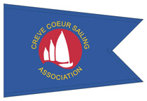

general introduction · race committee · steps for race day · course · timing · start · basic rules · finishing · scoring
General Introduction
Sailboat races are the main activity and focus of Creve Coeur Sailing Association (CCSA). We have organized our races to accommodate experienced sailors and newcomers alike. To keep the races competitive and fun for all our members, we do not have a formal Protest Committee, and we use only the most basic right of way and racing rules. However, we encourage all members to learn all of the U.S. Sailing Rules of Racing to enhance their racing skills.
SCHEDULE OF RACES
The CCSA Calendar which gives the dates for all our sailboat races for the year will be made available in the CCSA newsletter, posted on the CCSA Yahoo Group Calendar, listed on the CCSA Web Site, and can be picked up at the Race Committee desk.ELIGIBILITY
The CCSA racing series is open to members of the Creve Coeur Sailing Association and their guests.CLASS FLEETS
Boats that are members of organized Class Associations will follow their One-design Class Rules regarding equipment. CCSA members are not required to join Class Associations for their type of boats in order to participate.DISCLAIMER OF LIABILITY
Competitors participate in the CCSA series entirely at their own risk. The US Sailing Association and International Sailing Association Racing Rules of Sailing, Rule 4 – "Decision to Race: The responsibility of a boat’s decision to participate in a race or to continue racing is hers alone." The CCSA will not accept any liability for material damage, personal injury or death sustained in conjunction with or prior to, during, or after racing or any other CCSA event.FURTHER INFORMATION
For further information please contact the CCSA Commodore.

The Race Committee
The Race Committee is in charge of running the races. The Committee is made up of CCSA members who volunteer to serve on a rotating basis. They determine the course to be sailed based on the wind direction and conditions at the lake. Prior to the races, they check-in competitors by providing registratio/sign-up sheets, and provide information about the course, and any changes to the Sailing Instructions.
When it is time to begin racing, the Race Committee will provide the "Signals Made Ashore" which provides the starting sequence for each fleet of boats. Signals will consist of different colored flags, horn blasts, and a megaphone for hailed instructions. All visible signals take precedence over audible signals.
At the start and during the race, the Committee members will be watching for any rule infractions or safety concerns. The Race Committee is authorized to change courses, assess penalties, require the use of safety gear, stop a race, finish competitors on-course, and remove competitors from races as needed.
The Race Committee is supported by CCSA Officers and Board Members who are at the lake on race day, and may consult with those members on important decisions, such as marginal sailing conditions, postponements and organizational safety needs. The Race Committee does not need to consult with the CCSA Officers and Board Members if it is not necessary.
As a best safety practice, the CCSA will not start a race when the wind speed is consistently over 15 mph or gusting over 20 mph. If racing does occur in higher wind speeds, Competitors bear sole responsibility for their safety and the safety of their crew and ship.
No race will START after 4 pm, to allow all CCSA participants opportunity to relax and de-rig their craft during ample daylight.
Competitors Steps On Race Day
Step 1: Arrive Early: There are many advantages to arriving early at the lake on race day. There will be plenty of time to assemble your boat and spot any problems. Think of the parking lot as "Sail Boat 101". CCSA’s more experienced sailors may assist or answer questions and help solve problems. Beachable boats such as Sunfish and Lasers can be driven to the beach area North of the Race Committee tent for assembly and launching. Everyone needs to take special care when crossing the paved path which runs through the launching area. Step 2: Set Up Your Boat: Assemble boats in their parking spots. Boats should be "Mast up" with sails on but NOT launched with sails raised. Best practice is to wait to raise sails until a boat is tied to the dock and ready to sail away. If it is necessary to hoist, ensure sheets are free to run. Boats have fallen off the trailers when sails are raised. Step 3: Check In At Race Committee: Competitors must register with the Race Committee prior to the start of racing. The registration sheet will be located at the CCSA tent. Skippers can ask for crew and also volunteer to provide "rides" to the public at any point during the day.
Failure to register with the Race Committee will result in a no-score condition. The Race Committee is under no obligation to ensure that all members are registered to race and are not responsible for a failure to register.
Registering for racing also acknowledges the competitors have read and understood the Sailing Instructions and any additional Notice to Competitors. A copy of the Sailing Instructions will be available for review in the Race Committee binders.
Information about that day’s race course and any important information for competitors will be posted on a board at the Race Committee Desk. Committee members are usually able to answer competitors’ questions but may seek clarification from Officers or senior Sailors. After 1:45 pm, as the pre-start events occur, CCSA members are encouraged to stay clear of the Race Committee and not interrupt their work. An early check-in is encouraged to reduce distractions.
There is no need to check-out, unless a boat retires from a race, in which case the competitors should notify the race committee as soon as possible.
Step 4: Launch Boat: Once competitors have assembled their boat and placed all their equipment on board, they are ready to launch from the boat ramp. Please spend as little time as possible on the ramp. Due to the condition of the ramp, usually only two boats can launch at one time and most boats want to launch shortly before the races begin. Observe the signals and guidance from the Ramp Master. Exercise extreme caution when approaching and departing the launch ramp, observe all pedestrians, skaters, cyclists and other users of the lake.
Once launched, boats should be taken to the upwind side of the ramp and then quickly moved to the farthest point of the dock and away from the ramp to make room for boats still launching.
Step 5: Proceed To Race Course: With sails up, equipment and crew on board competitors can sail out to the course and warm up for the coming race.
Once the Race Committee signals the warning that a race is about to begin, all competitors not racing should stay clear of the Starting Area. This gives the first fleet to start room to maneuver.
SAFETY
Competitors are reminded of the first rule of sailing: "Sail Safe"
Competitors participate in CCSA races at their own risk. It is the responsibility of each boat’s crew to insure that they are carrying and wearing appropriate safety equipment for the conditions and that their boat is seaworthy.
The decision to launch is solely the responsibility of the skipper of each boat. Each competitor should be the best judge of their skills and the qualities of their crew and boat. See Racing Rules of Sailing, Part 1, Rule 4.
The Race Committee may require the wearing of approved personal flotation devices as a condition of participation. The Race Committee may also request competitors retire from racing if they feel safety cannot be adequately observed or if the competitors represent a danger to themselves or others.
When the YANKEE flag (red diagonal stripes on yellow background) is displayed and accompanied by one horn blast, competitors and their crews must wear an approved personal flotation device at all times while afloat. This applies to CCSA boats not racing as well as boats racing.RACING
A boat is racing from her preparatory signal until she finishes and clears the finishing line and marks or retires, or until the race committee signals a general recall, postponement or abandonment.EQUIPMENT AND MEASUREMENT CHECKS
A boat or equipment may be inspected at any time for compliance with its class rules and sailing instructions. On the water, a boat can be instructed by a race committee member to proceed immediately to a designated area for inspection.REPLACEMENT OF CREW OR EQUIPMENT
Substitution of competitors is allowed at any time. Substitution of damaged or lost equipment is also allowed at any time.ELECTRONIC DEVICES
Cell phones may be carried on boats for safety and personal communication, but may not be used in any way to gain advantage during races.
The Race Course
The course, including the approximate angles between legs, the order in which marks are to be passed, and the side on which each mark is to be left, will be posted at the race committee desk prior to the first race of the day, as part of the Notice to Competitors.
SIGNALS MADE AFLOAT / SIGNALS MADE ASHORE
Course changes may be announced between races or during the race. The race committee will attempt to hail each boat to announce any change of course if practical. It is the responsibility of each competitor to sail by the race committee desk to determine if any changes have been made to the course for the next race. However, do not obstruct the Race Committee or interfere with boats racing. Signals made afloat by the on-water Race Committee (e.g. C-Dory) will stand for that race and every subsequent race unless Signals Made Ashore change the course. A "C" Charlie flag or a "S" Sierra flag may be flown as necessary.TYPICAL COURSES
CCSA has several courses to choose from, including a triangular course (Olympic), a triangular course with an additional windward/leeward leg (Olympic-Modified), Windward-Leeward and combination of others. The course style will vary. Generally, all starts are upwind, unless there is a wind-shift in the last minute of the Start Sequence. If the wind-shifts in the last minute of the start sequence, competitors may be starting off-the-wind or the Race Committee may stop the start and abandon the race. Course design may change between races depending on wind conditions.NOTICES TO COMPETITORS
Notices to competitors will be posted on the marker board located at the race committee desk on race days.CHANGES TO SAILING INSTRUCTIONS
Any change to the sailing instructions will be posted on the Notice to Competitors marker board located at the race committee desk 30 minutes before the first start on the day it will take effect.CHANGING THE POSITION OF MARKS
Sometimes, due to wind shifts in direction or changes in wind speed, marks already set on the course will be moved at the direction of the Race Committee. The change will be signaled before the leading boat has begun the leg, although the mark may not yet be in the new position. All additional marks, not yet rounded, may be relocated without further signaling to maintain the course configuration. A mark that has been rounded may not be moved by the Race Committee unless it is to reposition it after it becomes adrift. Signals afloat may be made by the C-Dory if marks are being substantially moved.STARTING LINE
The starting line is set between two marks forming a start/finish gate located near the CCSA tent. Two red buoys shall be used to mark both the starting and finishing line of the course. All boats shall stay clear of the area between the Race Committee Race Desk and the STARTING LINE to permit the Race Committee to properly monitor the course and vessels at the starting area. Vessels that do not stay clear may be disqualified.STARTING/FINISHING AREA
The starting area is an imaginary box extending out around the Start Line. One side of the box begins at the shore and extends beyond the far end of the Start Line by half the length of the Start Line. The other side of the box extends half the length of the Starting Line in back of the Line and half the Starting Line length in front of the line. Competitors in their prestart sequence or start sequence may sail in any area outside the STARTING/FINISHING AREA but will not be able to assess a protest against another vessel when that vessel is not in the STARTING/FINISHING AREA.
Competitors can legally pass through the Start/Finish line anytime after their start. All competitors not in their prestart or start sequence must stay clear of the STARTING AREA. All competitors finished should immediately clear the FINISHING AREA, staying clear of boats racing.
All competitors are to stay completely clear of the area between the Race Committee and the entire start-finish line while racing is underway. Boats that continue to obstruct a clear view of the Race Committee and the FINISHING AREA may be disqualified. Do NOT dock in front of the Race Committee at any time while racing is being conducted.MARKS
Marks 1, 2, and 3 will be indicated by large, round, orange buoys. The start/finish gate will be indicated by small, round, red buoys. If a stand-off mark is used, the stand-off mark will be a small, round, orange buoy.THE FINISH
The finishing line will be the same gate as the starting gate; finishes may be upwind or downwind, competitors are to review the course board for directions on the finish line orientation.
Timing of the Races
SIGNALS MADE ASHORE
The Race Committee will communicate with competitors out on the lake by means of flags, a horn and a megaphone. When a sound signal is made at the same time as a flag signal, the flag signal always takes precedence. The absence of a sound signal shall not alter the meaning or effect of a flag signal. The Race Committee will make a warning signal using a series of short blasts on the horn to get the attention of competitors and signal that the countdown to a race is about to begin, or that a change to the Sailing Instructions has been made.
The scheduled time of the warning signal for the first race of each day is 1:55pm. The first scheduled start of racing will be 2pm.
The warning signal for each succeeding race will be made as soon as the Race Committee decides that the present race is completed. To alert boats that another race will begin soon, a series of short blasts will be sounded. Competitors are urged to remain clear of the finish line, but within the general area between races. Boats that are not racing (e.g. finished) may not interfere with boats that are racing.FLEETS
Competitors will be divided into two race day fleets, based on the typical speed for their type of boat, called a "Portsmouth Handicap Number". Boats with a PHN of 96.5 or less are in the Blue Fleet, and boats greater than 96.5 are in the Red Fleet. Competitors not previously assigned to a fleet will be assigned one when they register. The Red Fleet start will be indicated by a solid red flag, the Blue Fleet start by a solid blue flag. Blue Fleet of faster boats goes first. The purpose of dividing the boats into slower and faster fleets is to increase the number of races. Typically the faster boats go around the course twice as many times as the slower fleet. This means the two fleets will finish at roughly the same time with less time waiting for the next race.
One design fleets may be organized and compete within the Association. A minimum of five one design boats must be registered in order to constitute a fleet. Members wishing to organize a one design fleet must appoint a fleet captain.
One design fleets will compete within the Blue or Red Fleet as appropriate. A separate start and/or course will not be provided for one design fleets as a general format unless the One Design Fleet does not wish to be scored in the total or season CCSA series.
The Start
Races will be started as follows:
TIME SIGNAL MEANING 1 Min. before start of countdown. Repeated blasts on the horn. Attention!!! The 1st race start sequence is about to begin. 5 min. Countdown starts. Blue flag goes up, 1 horn blast. Blue Fleet skippers start stopwatches- 5 min. to start. 4 min. to start. Blue flag stays up, "P" flag goes up, 1 horn blast. Blue Fleet- 4 min. to start. 1 min. to start. Blue flag stays up, "P" flag goes down, 1 long horn blast. Blue Fleet- 1 minute to start. 0 min.-Blue Fleet starts.
5 min.- Red Fleet begins countdown.Blue flag down, Red flag up, 1 horn blast. Blue Fleet- Starts their race. Red Fleet- Starts their 5 min. countdown. 4 min. to start. "P" flag + Red flag, 1 horn blast. Preparatory signal for Red fleet. 1 min. to start. "P" flag down, 1 horn blast. 1 minute to Red fleet start. 0 min. Red Fleet start. Red flag down, 1 horn blast. Start of Red Fleet race. (The "P" flag, called the "Papa Flag", also known as "preparatory" is a white rectangle on a blue background.) At the hoist of the preparatory flag, boats in the indicated fleet are officially racing.
A boat in a class should be sailing at the hoist of their fleet preparatory signal. Boats not underway and sailing at the hoist of their fleet preparatory signal may be scored Did Not Start.
A boat starting later than 5 minutes after her starting signal will be scored Did Not Start.
Boats whose class warning signal has not been made shall avoid the starting area.
Basic Rules of Racing
Below is a summary of the sailing rules that apply most often on the race course. This summary is intended as an aid to sailors and not as a substitute for the Racing Rules of Sailing, a copy of which all racing sailors should own. A copy of the Racing Rules of Sailing 2013 - 2016 can be downloaded from the ISAF Website at http://www.sailing.org/documents/racingrules/index.php.
Right-of-Way Rules
PORT-STARBOARD
Port-tack boats must keep clear of starboard-tack boats. (Rule 10) Note: You are "keeping clear" of another boat when she doesn’t have to alter course to avoid you.WINDWARD-LEEWARD
When boats are overlapped (the bow of the overtaking boat is even or ahead of a line perpendicular to the transom of the forward boat) on the same tack, the windward boat must keep clear. (Rule 11)ON SAME TACK, ASTERN-AHEAD
When boats are on the same tack and not overlapped, the boat clear astern must keep clear. (Rule 12)
Note: One boat is "clear astern" if she’s entirely behind a line through the other boat’s aft-most point, perpendicular to the other boat. The other boat is therefore "clear ahead." Two boats are "overlapped" if neither is clear ahead of the other.TACKING TOO CLOSE
Before you tack, make sure your tack will keep you clear of all other boats. (Rule 13)LIMITATIONS ON RIGHT OF WAY
If the other boat must keep clear, you have "right of way". Even if you have right of way, there are limitations on what you can do:
AVOID CONTACT. You must avoid contact with other boats, but a right-of-way boat will not be penalized under this rule unless the contact causes damage. (Rule 14)
ACQUIRING RIGHT OF WAY. When you do something to become the right-of-way boat, you must give the other boat a chance to keep clear of you. (Rule 15)
CHANGING COURSE. When you change course, you must give the other boat a chance to keep clear. (Rule 16)
ON THE SAME TACK; PROPER COURSE. If you are overlapped to leeward of a boat on the same tack, and if just before the overlap began you were clear astern of her, you cannot sail above your proper course (i.e., the course that will take you to the next mark the fastest) while you remain overlapped. (Rule 17.1)PASSING MARKS AND OBSTRUCTIONS
There is a set of special rules for boats that are about to pass a mark or obstruction. However, these special rules don’t apply between boats on opposite tacks on a beat to windward. (Rule 18.1)
Except at a starting mark, you must give boats overlapped inside you room to pass a mark or obstruction, and boats clear astern must keep clear of you.
There’s a three-length zone around marks and obstructions, and a boat’s rights and obligations with respect to another boat are "frozen" when the first of them enters that zone. If you are clear astern of another boat when she enters the zone, you must keep clear of her until both boats are past the mark or obstruction, even if you later become overlapped inside her. (Rule 18.2)TACKING NEAR A MARK
Don’t tack within the three-length zone at a windward mark if you will cause a boat that is fetching the mark to sail above close-hauled to avoid you, or if you will prevent her from passing the mark. (Rule 18.3)ROOM TO TACK AT AN OBSTRUCTION
When boats are on the same tack on a beat and come to an obstruction, the leeward boat gets to decide which way they are going to pass it. If the leeward boat hails for room to tack, the other boat must give it to her; but the leeward boat must give the other boat time to respond before she tacks. (Rule 19)
Other Rules
Before your Preparatory Signal, or after you finish, don’t interfere with boats that are racing. (Rule 22.1)
If you start too soon, keep clear of others until you sail completely behind the start line and then restart.
If you break a rule while racing, or if you hit a mark, do one complete 360-degree turn. (Rule 44*)
(*CCSA Sailing Rules require only one 360-degree turn.)
Penalties
A competitor in violation of the rules during a race may exonerate themselves by doing one of the following:
Get away from other boats and do one 360-degree turn as soon as possible after the violation.
Taking a Scoring Penalty of one place.
Retire from the race.The race committee may disqualify a boat that fails to exonerate itself.
A boat that has taken a penalty of one place or retired shall notify the race committee as soon as possible on the day of the race.
Finishing The Race
As each competitor crosses the Finish Line, the Race Committee will give one short horn blast to signal that they have noted a boat finishing and recorded its elapsed time.
TIME LIMITS FOR RACES
On light wind days, the Race Committee will use time limits listed to abandon racing. The Committee will use the time limits to score as DNF competitors who do not finish within the time limits.
FLEET Minimum Time To Reach First Mark Minimum Time To Finish Race Blue 20 min. 60 min. Red 30 min. 60 min. Times indicated are times after the respective fleet starts. If no boat has passed Mark 1 within the Mark 1 time limit or no boat has completed the course within the time limit for her fleet, the race will be abandoned.
Individual boats failing to finish within 30 minutes after the first boat in their respective fleet finishes will be scored - Did Not Finish.
Scoring
The scoring system is as follows:
A competitor must complete at least ten races during a year’s racing season in order to be eligible for prizes.
A Modified high-point average system is used with participants weighting for each position on the course.
When twenty or more races have been completed, a boats series score will be the sum of her best twenty high-point-average scores.
Seasonal series (spring, summer, fall) may be announced, using either set dates or set number of races.
Class finishes for recognized one design classes may be recorded separately. A minimum of three boats must start for a race to be scored within a one-design class. It is the responsibility of the one design fleet captains to maintain records of participation and race scoring for their respective fleets.
DNF will not be scored as points but will be counted towards awards eligibility.
Prizes
Prizes will be awarded to competitors based on their performance over the season as determined by the awards committee. One design class prizes may also be awarded at the discretion of the awards committee.
One design class prizes may also be awarded at the discretion of the awards committee.
Disagreements Between Competitors
Competitors in the sport of sailing are governed by a body of rules that they are expected to follow and enforce. Sailing in particular relies on self-enforcement and a modern-era Corinthian-spirit code of conduct. The fundamental principle of sportsmanship is that when competitors break a rule they will promptly take a penalty or retire. It is hoped that all competitors will make an effort to learn the rules and apply them conscientiously to the best extent of their knowledge.
It is expected that any competitor who violates a racing rule under the ISAF or US RRS, or USCG COLREG for Inland Waters (as appropriate), or when so advised by another competitor or the race committee, will promptly take a penalty or retire from the race. It is the responsibility of the competitor to be familiar with both the Racing Rules of Sailing and the COLREGS as applicable. Take your penalty turn with grace - if you do not feel a penalty is deserved and do not accept the penalty turn for a rules or safety infraction, do not become acrimonious in redress.
Due to our casual sailing philosophy and emphasis on learning, we ask that disagreements between competitors be addressed by CCSA only in instances where they can provide either a learning experience or they point out issues with the rules, instructions, or committees that will enhance the sailing experience for members. Do not take a heated disagreement to the Yahoo group or our outreach programs without consulting the CCSA Officers and Board first.
Disagreements will not be subject to a hearing by a formal protest committee per se, but will be informally discussed and resolved by the parties in conference with at least one CCSA Officer or Board Member during a social gathering held at the end of each race day. Both parties to the disagreement should attend to share viewpoints. The Officer or Board Member will make a decision and advise if any changes need to be made to the Scoring Official. Protests that are raised after the day’s events are complete will not be heard but may be amicably discussed.